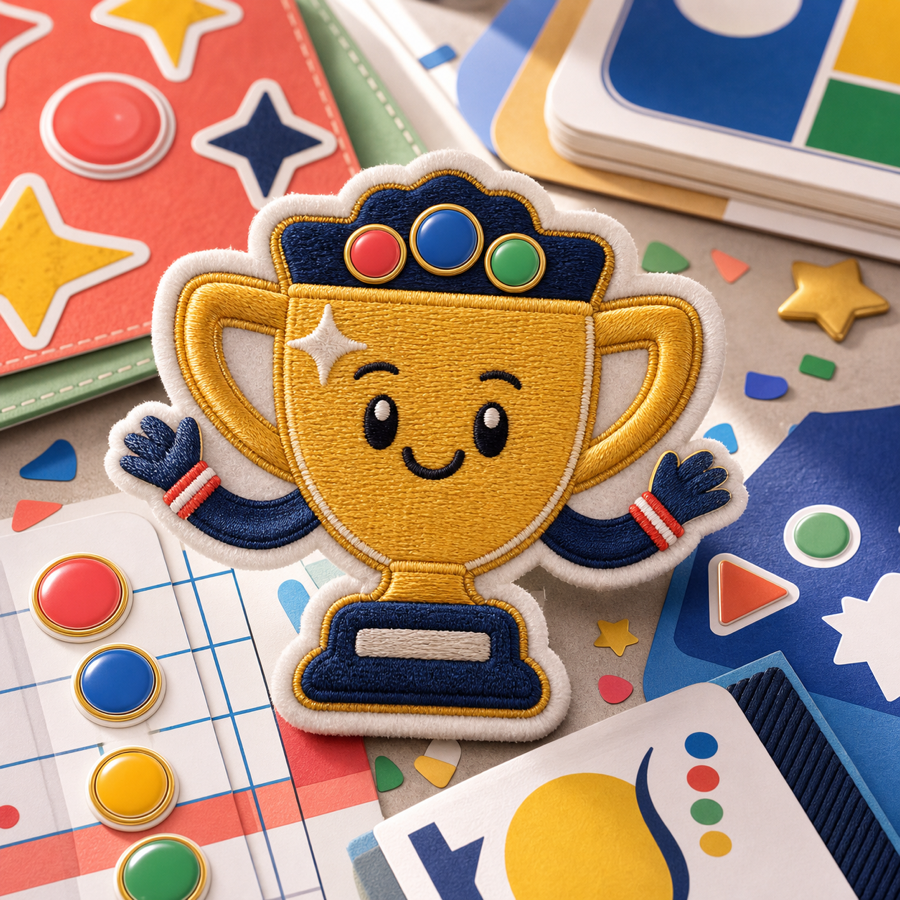

Personality
Each system has a named mascot and a specific visual world rather than neutral product chrome.
A second exploration pass for iPhone 16 Pro on iOS 26+, built around mascot-led systems, visual assets, and purposeful scorekeeping motion.
This is still exploration only: static HTML/CSS, no SwiftUI implementation changes, no model changes, and no OpenAI API interaction changes.

A tactile table companion where a score-token mascot keeps game night warm, quick, and legible.

A kinetic official-scoreboard system with command energy, animated totals, and a confident mascot.

A bright sticker-and-patch score ledger for families and friends, with celebratory motion.
Each system has a named mascot and a specific visual world rather than neutral product chrome.
Animations map to score moments: score pops, phase glow, token drift, confetti, and command pulses.
Glass-like treatment is limited to status/chrome and controls; content surfaces stay readable.